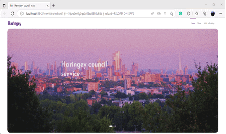
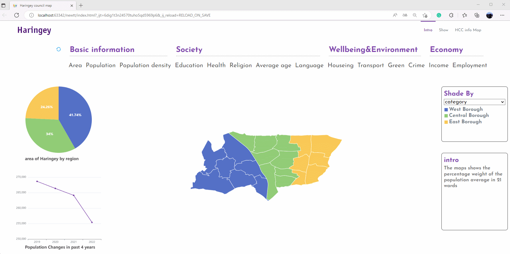
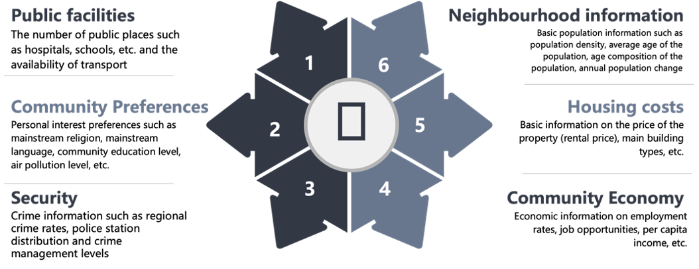

Mr Songchen Yao, a 2022/23 MSc student in Urban Informatics programme, successfully completed his 10-week placement at the London Borough of Haringey in the spring of 2023, under supervision from Dr Yijing Li (Programme Academic Lead) and Mr Edurado Lopez Salas (Lead Analyst for Strategy & Policy Team at Haringey Council). KCL served as the catalyst for Songchen’s unwavering urban development ambitions, who embarked on an influential project to unveil crucial sociodemographic information about Haringey borough within Greater London.
Leveraging the education received at KCL, Songchen designed an innovative interactive web page, adorned with captivating data visualisations and enriched by standardised sociodemographic datasets. This page became a powerful resource, empowering both the council and the citizens with easily accessible and interpretable information.
His passion for unlocking the power of urban data science, fuelled by KCL's nurturing environment, transformed into tangible actions that resonated within the community. Through education and data-driven insights, Songchen’s placement exemplifies the power of MSc Urban Informatics in driving meaningful change for the environment and local communities.
Unveiling Data Openness and Information Access
In recent years, the demand for open and transparent government information has surged. While Haringey borough and other local authorities provide detailed data through websites, effectively communicating the story behind the data to users remains crucial. With Haringey's diverse and mobile population of over 260,000 residents and numerous visitors, finding an inclusive approach becomes imperative.
Songchen Yao took on the challenge of unveiling sociodemographic information about Haringey. Drawing on his knowledge and skills acquired at KCL, he crafted an innovative solution to bridge the gap between government data and citizens. Inspired by his education at KCL, including insights from "Telling the story of data" and “Computer Programming for Data Scientists” courses, the student understood the significance of meaningful data communication, and skillfully utilised advanced data visualisation to transform dry statistics into captivating visual narratives. As the main output, he designed an interactive web page that breathed life into Haringey's sociodemographic data, making it accessible and engaging. The result was an interactive web page that not only maintained accuracy but also made the data easily understandable for Haringey's diverse and mobile population.
Fostering Community Engagement and Environmental Awareness
Although this project is still in the initial stage, the work has the potential to profoundly influence community development and public participation. By designing an interactive web page that presents comprehensive sociodemographic information in a user-friendly manner, he breaks down barriers and encourages public engagement. Local residents, community leaders, and visitors alike find themselves empowered with easy access to vital data, bridging the gap between the Haringey council and its citizens.
Through his data visualizations and cartograms, Songchen effectively communicates complex environmental issues, sparking a collective understanding of the borough's realities, such as demonstrating the local carbon emissions. The web page becomes a catalyst for dialogue, encouraging open discussions and empowering the community to actively participate in decision-making processes. As environmental awareness flourishes, local residents and stakeholders collaborate with renewed vigour, coming together to address pressing issues and co-create sustainable solutions. The work hence not only strengthens community bonds but also lays the foundation for a more informed and engaged society, where individuals feel a sense of ownership and responsibility for their environment.
A Catalyst for Personal and Professional Growth
For the student himself, this placement experience proved to be a transformative journey, igniting personal and professional growth as he embarked on the task of visualising Haringey's wards and presenting socioeconomic information on an interactive web page. This practical application hones his grasp of data visualization and data development, enriching his skill set. Beyond technical expertise, Songchen’s interaction with his line manager at Haringey council, exposes him to the dynamic and intriguing working environment of the local government in the UK. This placement offers a fresh perspective and ignites a sense of novelty. Despite encountering challenges, such as initial overwhelm and data discrepancies, the student’s perseverance leads to significant personal development. Through constant problem-solving and exploration, he triumphantly overcomes obstacles, showcasing his resilience and adaptability.
As addressed by the intern, this placement not only strengthens his academic foundation but also deepens his understanding of the intricacies of environmental data and its real-world applications.
“thanks to KCL, the placement leader, and the Haringey council for their unwavering support and guidance throughout this experience. The whole journey, from collaborating with the council to the guidance received from my module teacher, has been nothing short of fantastic”.
As he reflects on this transformative experience, Songchen is now equipped with newfound confidence and knowledge, poised to embark on a fulfilling career dedicated to unlocking the power of urban informatics to enable community and urban development.
(Editor: Mr Xianghui Zhang, Dr Yijing Li)



More of your story continues here...